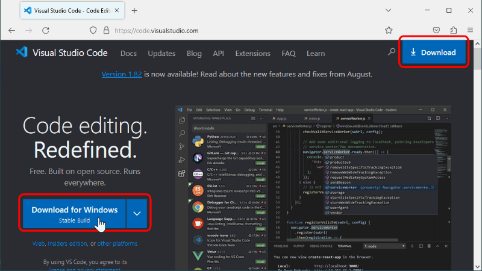
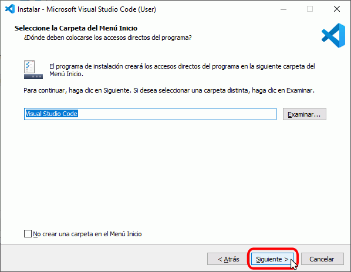
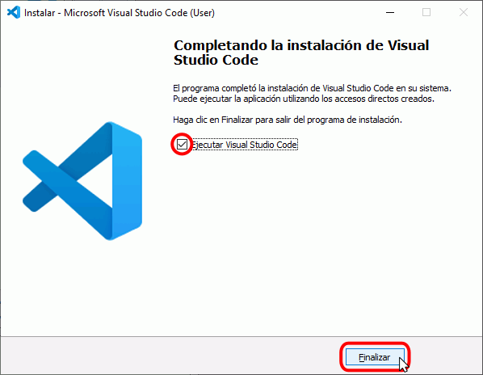

Visual Studio Code es un editor de programación multiplataforma desarrollado por Microsoft. Es un proyecto de software libre que se distribuye bajo la licencia MIT, aunque los ejecutables se distribuyen bajo una licencia gratuita no libre.
La primera versión beta de Visual Studio Code se publicó en noviembre de 2015 y la primera versión estable, Visual Studio Code 1.0, se publicó en abril de 2016. Desde su aparición, Visual Studio Code ha mantenido un ritmo de desarrollo muy rápido, publicando cada mes una nueva versión. Actualmente (octubre de 2017), la última versión publicada de Visual Studio Code es la versión 1.18, publicada el 9 de noviembre de 2017.
Cada nueva versión de Visual Studio Code incorpora nuevas funcionalidades. Las principales novedades se pueden consultar en las notas de cada versión.
La página oficial de Visual Studio Code es https://code.visualstudio.com/. Desde la página principal se puede descargar la última versión estable o acceder a la página de descargas:

La página de descarga es https://code.visualstudio.com/Download. Desde ella se pueden descargar las versiones para diferentes versiones operativos (32 / 64 bits, Windows / GNU/Linux / Mac).
En cdlibre.org hay una sección dedicada a editores web, con información detallada sobre la última versión publicada para Windows de 64 bits.
Instalar Visual Studio Code en Windows
Nota: Las capturas siguientes corresponden a Visual Studio Code 1.17 en Windows 10 de 64 bits. Versiones posteriores pueden ser ligeramente diferentes.
Haga doble clic sobre el instalador de Visual Studio Code, para poner en marcha el asistente de instalación.
La primera pantalla anuncia que se va a instalar Visual Studio Code. Haga clic en Siguiente para instalar el programa o en Cancelar para salir del programa de instalación.
La segunda pantalla exige aceptar la licencia de Visual Studio Code para continuar la instalación:
La tercera pantalla permite elegir el directorio de instalación:

La cuarta pantalla permite elegir el nombre de la carpeta del menú de inicio:
La quinta pantalla permite elegir algunas tareas adicionales tras la instalación:
Finalmente se muestran las opciones elegidas en las pantallas anteriores. Para iniciar la instalación, haga clic en Instalar.
A continuación, se instalará Visual Studio Code.

Una vez completada la instalación, se muestra la pantalla final. Haga clic en Finalizar
Primera ejecución
La primera vez que se abre Visual Studio Code tras la instalación, se muestra una página de bienvenida al programa
Actualizar Visual Studio Code
Nota: Las capturas siguientes corresponden a Visual Studio Code 1.17 en Windows 10 de 64 bits. Versiones posteriores pueden ser ligeramente diferentes.
Para comprobar si existen actualizaciones disponibles de Visual Studio Code, abra el menú Ayuda > Buscar actualizaciones ....
Si no hay actualizaciones disponibles se mostrará una ventana de aviso:
Pero si hay actualizaciones disponibles, mientras Visual Studio Code descarga la actualización el menú se mostrará desactivado:
Tras unos segundos, el menú mostrará la opción Reiniciar para actualizar .... Seleccione dicha opción de menú para actualizar.
Al reiniciar, se iniciará el instalador de Visual Studio Code ...
... que instalará la actualización:
Una vez completada la actualización, se abrirá Visual Studio Code mostrando en una pestaña las notas de la versión, que comentan las novedades más importantes: